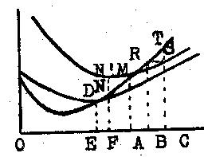

Librairie de Médicis — 1948 (deuxième édition)
par Richard von Strigl
traduit par P. Ochwald
Un raisonnement, que nous exposerons plus tard, montre que l'augmentation du revenu n'est pas seulement possible du fait qu'on utilise plus de moyens de production, mais aussi du fait que l'emploi des moyens de production est modifié pendant le temps que dure le processus de production. Le revenu augmentera si — par un choix judicieux — les moyens de production sont utilisés de telle manière qu'il s'écoule plus de temps entre le moment où l'on commence à s'en servir, dans la marche de la fabrication, et le moment où l'on arrive à terminer le produit. Par conséquent, le revenu peut être accru si on possède la possibilité d'attendre plus longtemps un revenu de la production de l'instant où l'on commence à utiliser tel moyen de production ; ou, en d'autres termes, la possibilité de maintenir l'action fournie par les divers moyens de production "liée" au cours de la fabrication pendant un certain "temps d'attachement", avant que le revenu soit acquis ; ou, encore — dans une formule très répandue et très vivante — la possibilité d'employer les moyens de production dans une sorte de "détour de la production prenant du temps". Le producteur qui veut utiliser cette chance d'augmenter le rendement doit pouvoir payer ses moyens de production, son équipement, au moment où il va les employer (ou immédiatement après), bien qu'il n'en touche le revenu qu'ensuite, et cela parce que les fournisseurs de moyens de production, surtout les ouvriers, réclameront en général un paiement immédiat. Comme le paiement des moyens de production, du moins dans notre économie, a lieu généralement en espèces, le fait de disposer d'une certaine somme d'argent est donc une condition indispensable pour permettre au producteur d'utiliser ces moyens pendant le temps d' "attachement". L'emploi d'argent pour couvrir les frais de production a donc déjà lieu à ce moment, tandis que le revenu produit par ces dépenses, qui permettra de rentrer dans ces débours, ne sera réalisé que plus tard. En ce cas, nous dirons que ces sommes d'argent sont du capital-argent (capital liquide). Mais comme nous étudierons les problèmes de l'argent séparément, plus loin, et surtout comme les problèmes du capital-argent ne peuvent pas être traités en les séparant d'autres problèmes monétaires, nous étudierons la question qui nous occupe ici en nous en tenant à "l'économie naturelle", donc sans faire état de l'argent, ou de la somme d'argent disponible. Nous y arriverons sans aucune difficulté, si nous supposons que, dans une économie qui ne connaît aucun moyen général d'échange, donc aucune monnaie, tous les paiements devraient se faire en nature, en marchandises, et en particulier, que les paiements des moyens de production de l'équipement devraient se faire en nature, en marchandises, et en particulier, que les paiements des moyens de production de l'équipement devraient se faire au moyen de produits finis de consommation. Si l'on considère cela, le producteur qui veut user du "temps d'attachement" doit avoir à sa disposition un fonds de marchandises prêtes à être consommées, pour pouvoir payer ses moyens de production. La nécessité de constituer ce fonds spécialement pour l' "alimentation" des moyens de production (pratiquement, d'abord les ouvriers), s'impose parce que le revenu en produits finis ne viendra que longtemps après que le travail productif aura commencé. Ce fonds a été désigné sous le nom de "fonds de salaires", puisqu'il s'agit en premier lieu de la rétribution des ouvriers. Ce fonds des salaires apparaît ainsi comme la forme primitive, naturelle, du capital. Le principe de l'accroissement du rendement de la production par l'emploi du temps "d'attachement" pour les moyens de production devient, maintenant que nous introduisons l'idée de capital, une formule concernant le rendement des dépenses en capitaux, ou la "productivité du capital". L'expression serait plus exacte, plus correcte, si elle montrait que les dépenses en capital pendant le temps d'attachement deviennent un moyen de production. Avec cela, le capital intervient désormais à côté des autres moyens de production cités par nous (travail et sol), et devient un troisième instrument de production.
Mais comment expliquer ce rendement, cette productivité du capital ? Nous rappellerons ici que le capital rapporte un intérêt qu'il procure, donc un revenu, et que cet intérêt peut être compris dans le calcul des coûts du producteur. Si la dépense en capitaux peut apporter un rendement en intérêt, il faut que le capital, comme tout autre instrument de production, puisse contribuer à l'accroissement du revenu : mais ce revenu dépend du temps où le capital est attaché à l'affaire, — le calcul se fait suivant la formule : capital (C) multiplié par temps (t) — donc, depuis le moment où les moyens de production (capitaux ou payés avec des capitaux) sont employés dans le processus de la fabrication, jusqu'au moment où le revenu apparaît. Dès lors l'élément dont dépend le revenu en intérêt est l'attachement du capital durant un certain temps (relevant de l'économie), donc la grandeur capital multiplié par temps (C x t). La suite découle du schéma de la démonstration du revenu décroissant, et du principe de la productivité marginale (figure 10). Nous pouvons considérer comme moyen de production une grandeur déterminée, capital multiplié par temps, et la supposer combinée avec une quantité croissante du moyen de production "travail". Nous obtiendrons alors pour ce facteur variable une courbe de revenu marginal. En déterminant la part de production à attribuer à ce facteur variable, il restera un solde, qui doit être attribuée au capital. Ou bien — et cela conduit au même résultat —, nous pouvons supposer qu'une certaine quantité de moyens de production est donnée — par exemple, un certain montant de dépenses pour main-d'oeuvre — et ensuite augmenter le rendement de ces moyens de production par adjonction d'unités de dépenses en capitaux (C x t). Ainsi nous obtiendrons pour les dépenses en capitaux une courbe-limite des revenus, et pour un montant donné de ces dépenses un revenu suivant l'échelle des produits marginaux. Ce produit marginal de la dépense d'une unité de capital par une unité de temps est le taux d'intérêt du capital. La fonction de l'intérêt du capital est la même que celle de tout autre partie des coûts : le capital est employé de telle manière que son revenu justifié les frais nécessités par l'emploi de capitaux, et que le revenu produit grâce à l'emploi de ce capital soit augmenté au maximum.
Ici, nous pourrions rattacher rapidement l'étude du capital à la théorie du fonds des salaires dont nous venons de parler. Tout d'abord, il est clair qu'un fonds de salaires est nécessaire pour payer les ouvriers dont les prestations en travail appartiennent au processus de la fabrication pendant la période correspondante. Par contre, la paie des ouvriers qui fabriquent en peu de temps un objet terminé peut se faire de suite sur le revenu du travail. Le fonds des salaires n'est donc plus un fonds pour paiement de tous les ouvriers, mais seulement du premier des deux groupes cités ici. Il faut encore remarquer que le fonds des salaires que nous décrivons ici n'est pas à considérer comme une grandeur fixe, rigide, qui serait à peu près identique à un "produit social". Les biens finis et disponibles ne remplissent le rôle de pourvoyeurs en moyens de production que dans la mesure ou leur propriétaire les "voue" à l'investissement. Remarquons, à propos du principe général de la productivité marginale, que celui-ci n'est réduit en rien par ce qui est développé ici. On peut sans aucune peine déduire de ce que nous avons déjà dit, que le produit provenant d'ouvriers dont les prestations en travail restent "attachées" dans le "détour de la production", sera grossi de l'intérêt prévu pour le capital investi qui correspond aux dépenses payées pour ce travail ; il sera donc supérieur à celui provenant d'ouvriers occupés à la fabrication des objets de consommation, et qui sont payés sur le produit de leur travail. En ce qui concerne la question de la "répartition", il faudrait renvoyer à ce que nous avons dit sur le partage du revenu du sol et du travail (pages 74 et suiv.). Nous ne pouvons ici développer toute la démonstration du théorème selon lequel, pour une organisation de la production adaptée à l'offre de capitaux, le fonds des salaires suffirait juste à pourvoir à "l'alimentation" des moyens de production qui trouvent leur emploi en utilisant le temps d'attachement.
La théorie du capital, qui semble extrêmement simple dans sa forme abstraite et qui peut, sans difficultés, entrer dans le schéma de la formule générale de production, apparaît dès lors souvent comme une élaboration irréelle. La difficulté d'appliquer cette théorie, de considérer les circonstances de notre économie comme si elles étaient conditionnées dans leurs bases par les relations que nous avons établies, réside en ce que le processus simple de l'emploi des capitaux que nous avons exposé ici est dissimulé par plusieurs phénomènes dont nous aurons à parler, sans compter le déguisement économique et financier des phénomènes de notre temps, dont nous aurons aussi à nous entretenir. — Nous citerons plus en détail deux de ces phénomènes : la transformation de capital libre en moyens de production fabriqués, tout particulièrement en capitaux de longue durée, et la division verticale du procédé de production en étages distincts.
Si les moyens de production sont employés dans un processus de production de longue durée, un phénomène physique se produit naturellement lorsque l'on fait appel au capital dans le cours du processus technique de la production des marchandises, et avant la terminaison du produit. Nous aurons à distinguer ici, dans les "biens-moyens de production", ou "biens-capitaux", deux groupes importants. Tout d'abord, les matières premières, qui, au cours de la fabrication, seront peu à peu transformées en produits finis. On pensera aux stades de la fabrication : coton brut, filé, tissé, vêtement terminé. Dans le voisinage immédiat de ces matières premières figurent les matières accessoires, qui sont employées en cours de fabrication, par exemple le combustible, l'huile des machines, etc. Le deuxième groupe de biens-capitaux se compose d'abord des outils dans leur forme la plus variée. leur particularité, c'est de ne pouvoir être employés dans une quantité de fabrication différente. Ainsi, les plus simples outils de menuisier pourront servir à fabriquer un grand nombre de meubles. Le fait de durer caractérise surtout le groupe très important des outils qui constituent les machines modernes. Une machine textile, un tour, etc., peuvent être utilisés pendant plusieurs années pour fabriquer toute une série de produits. A côté de ce que signifie la durée relativement longue, — elle n'est certes jamais illimitée — d'un pareil moyen de production, il faut considérer une autre caractéristique de la production moderne, l'importance relative de ces moyens de production qui entrent pour une très grande part dans le montant des frais de production. Pour désigner cette catégorie de biens-capitaux, on emploie le terme "capitaux durables" (capital fixe).
La création de ces sortes de biens-capitaux est un "investissement" des moyens de production en y consacrant un "temps d'attachement". Si, par exemple, des ouvriers extraient du minerai de fer dans un gisement, et si ce fer est travaillé ailleurs, ce qui entraîne un nouvel appel à la main-d'oeuvre, et si enfin se crée une machine, qui peut être employée pour produire en fabrication courante des biens de consommation quelconques, il y a pour ces diverses prestations en travail une manière d'utilisation, qui produira non pas de suite, mais beaucoup plus tard, un revenu provenant des biens de consommation. Cette dépense de travail n'est possible qu'en consentant un sacrifice en "temps d'attachement", donc en s'attachant des capitaux, en les investissant. Rien n'est changé par le fait que, dans cette création de produits, on doit employer dès le début des capitaux, ou des objets jouant ce rôle, déjà finis, et fabriqués par exemple par des machines s'il s'agit de l'industrie mécanique. Au contraire, là aussi nous ne rencontrons pas autre chose que ce que nous avons déjà trouvé comme entrant en fait dans les opérations de production employant du capital, c'est-à-dire un outillage employé de telle manière qu'un bien de consommation ne sera produit que longtemps après sa participation au processus de fabrication. Il ne s'agit plus ici de travail humain, mais précisément d'un moyen de production autrement constitué. naturellement, rien n'est non plus changé dans la situation de fait si le moyen de production, par exemple la machine dans une fabrique de machines, ne se trouve pas complètement absorbée dans ce qu'on produit, mais contribue encore à créer un autre capital.
Passons maintenant à la division verticale du processus de fabrication. Si nous suivons le cours des opérations dans la fabrication d'un bien de consommation dans l'économie moderne, sans tenir compte de l'organisation sociale, nous verrons qu'à un moment donné quelconque, il y a une extraction (ou une récolte) de matières premières, puis, généralement autre part, une transformation de ces matières en un produit intermédiaire quelconque, et de nouveau, ailleurs, une nouvelle transformation, jusqu'à ce que, à un dernier emplacement, nous puissions voir apparaître le produit fini. En constatant cela, nous examinons seulement le processus de transformation des matières premières, mais non la création des machines employées. Si nous voulions aussi le faire, en admettant que la production soit réorganisée complètement sur une base nouvelle, si nous voulions donc aussi suivre la fabrication de ces machines, nous pourrions voir un processus encore bine plus compliqué, plus richement varié, se dérouler dans d'autres endroits de notre domaine économique. Dans notre organisation actuelle, il n'est nullement prévu que toutes les opérations diverses de la marche de la fabrication soient réunies en une organisation centrale. Presque partout, les divers stades du processus de la production, ou plusieurs groupes de ces stades, sont situés dans des exploitations différentes, entre lesquelles le seul lien consiste en un trafic d'échange. De cela résulte que l'importance du calcul des intérêts est tout à fait réduite pour l'observateur. Le producteur particulier achète ce qui lui est nécessaire à un autre producteur, qui vient avant lui. Le prix de revient que calcule ce dernier contient naturellement les frais pour intérêts payés par lui, — et, dans un passé plus éloigné, ceux qui ont été payés par les autres producteurs qui précèdent. — Le producteur qui achète des biens-capitaux variés, paie en les achetant l'intérêt échu pour toutes les productions qui ont précédé ; il paie cet intérêt en payant le prix d'achat total, sans savoir combien ce dernier comprend de frais d'intérêts. Lui même comptera ensuite les frais pour intérêts qui entreront dans sa production, et ceux-là seuls pourront apparaître dans son calcul. Jamais on ne voit l'addition générale de tous les intérêts qui se sont accumulés dans une production depuis le début initial. Cette dissimulation des frais d'intérêts apparaît de façon tout à fait évidente si ces intérêts ne jouent pas un grand rôle dans le dernier stade, et peuvent pratiquement y être passés sous silence. Le tailleur, par exemple, chez qui les frais de la machine à coudre, des ciseaux et du fer à repasser ne jouent guère et qui, pratiquement, ne calcule pas d'intérêt pour ces "investissements", ne se rendra pas du tout compte que sa production n'est que le dernier chaînon d'une production antérieure qui représente des capitaux énormes, et dans laquelle le capital d'un tissage, d'une filature, d'une fabrication de machines textiles, d'une fabrique de machines-outils, etc., a gagné un intérêt.
Il nous faut ici noter un phénomène particulier à l'emploi des capitaux. NOtre point de départ sera une observation générale sur la question des coûts. Si, par exemple, un producteur paie des ouvriers, il fait une dépense dont la justification se trouvera dans le revenu, si, une chose que nous admettons ici, la production est réussie au point de vue économique et technique. Le résultat des dépenses engagées pour ces frais sera un revenu, dans lequel le producteur retrouvera une compensation pour les frais engagés. Exactement comme pour le cas des salaires payés pour main-d'oeuvre, ce même résultat sera obtenu après paiement des matières premières et des produits accessoires. En principe, toutes les fois que la production (et la vente) ne demandent pas un délai trop important, le paiement des coûts est possible en les prélevant sur le revenu. Ainsi le patron boulanger peut payer ses ouvriers à la fin de la semaine, sur ce qui est rentré pendant la semaine par la vente du pain. Mais la situation est autre lorsqu'on emploie des capitaux. Par exemple, le producteur qui fait construire un haut fourneau n'aura pas la possibilité de payer ses ouvriers avec les rentrées provenant du fer qui sera produit bien plus tard par le haut fourneau (et encore bien moins avec ce qu'il recevra pour un produit fini, qui sera fabriqué encore beaucoup plus tard, et à un tout autre endroit, à l'aide ce fer). Il doit "avancer" le salaire — suivant une formule très usitée et souvent mal employée. — Les ouvriers ne peuvent pas attendre jusqu'à ce que ce très long travail soit fini, jusqu'à ce que, ensuite, on puisse produire du fer, etc. En ce cas, le "capital pour salaire" du producteur — que ce soit le sien propre ou qu'il l'ait emprunté à un capitaliste — ce capital est une condition nécessaire à ce mode de production. Les dépenses faites pour ce capital devront donc trouver leur justification dans le revenu qu'on obtiendra. Ce sera la même chose que pour toute autre dépense engagée pour des frais. Mais aux frais de production s'ajoutent alors les frais d'intérêt, — le capital pour salaires a été investi —, longtemps avant qu'il n'y ait un revenu, et l'intérêt doit aussi être couvert par ce revenu. La dépense en capital est, dans cet exemple, identique à une dépense en salaires. Ce qui constitue, à côté des frais de salaires, un supplément de frais, ce sont les intérêts de ce capital pendant la période "d'attachement". Considérons maintenant une autre manière, bien plus importante en pratique, d'engager des capitaux. Une fabrique achète des machines ; là aussi, il y a des dépenses pour frais, qui trouveront leur justification dans le revenu. Il faut donc que le capital engagé dans cet investissement soit gagné à nouveau par un revenu. Comme ce capital est lié pour un temps d'attachement (d'immobilisation) il faut que, pour ce temps aussi, on gagne un intérêt. — La nécessité en apparaît de suite, si l'on imagine que le producteur emprunte contre intérêt ce capital "liquide" à un capitaliste. Le producteur, qui investit un capital, attendra qu'après la fin des fabrications ce capital lui revienne à nouveau entre les mains, et soit, en fait, augmenté d'un intérêt. Le capital une fois investi pourra donc (si la production est réussie), redevenir "libre". Cette libération du capital ne pourra pas se faire d'un seul coup, là où il a fallu l'investir en biens durables (en immobilisations). Les diverses séries de productions ne pourront contribuer chacune qu'à libérer une partie du capital. Ainsi, le capital investi, par exemple, dans une machine textile ne pourra être libéré entièrement qu'au bout de trois ans, ou peut-être cinq ans ; pendant ce temps, le producteur ne pourra prélever quotidiennement sur la production journalière qu'une partie relativement bien petite du capital investi (en vue du remboursement). Toutefois, la libération du capital investi ne sera plus l'affaire exclusivement personnelle de celui qui a une fois engagé ce capital. Et cela parce que l'investissement fait une seule fois en capitaux durables ne peut plus, à la longue, rendre de vrais services à la production. La machine s'usera et devra être remplacée. De ce point de vue, la libération du capital qui a été une fois investi revêt une importance toute particulière. Si la production doit continuer, la machine hors de service doit être remplacée, et l'investissement fait une première fois, renouvelé. Ce remplacement est, en soi, possible, en ayant recours à un nouveau capital. Mais comme l'abondance de fonds d'une économie est limitée, les appels renouvelés aux capitaux pour une seule et même production finiraient forcément par dévorer tous les capitaux disponibles d'une organisation. Sans appel au capital du dehors, un investissement fait une fois ne peut jamais qu'être récupéré par le capital immobilisé autrefois, et libéré à nouveau. Dans la comptabilité, on calcule la libération des capitaux investis de façon durable, et qui doivent être retrouvés, ou remboursés, sous forme d'amortissements. Sous l'angle de la technique financière, cet état de fait se définit le mieux si on dit qu'une production, qui a été une fois financée, doit — si elle n'a pas échoué —, se financer par elle-même par la suite. Des expériences amères ont toujours montré qu'une affaire, financée une première fois, et qui demandait sans cesse de nouveaux capitaux pour se maintenir — et non pour s'agrandir, ce qui serait naturellement tout autre chose — ne pouvait jamais prospérer à la longue.
Le moment de la libération du capital a aussi son importance, si on l'observe d'un autre point de vue. Une exploitation de la production originale libère, ou rembourse son capital. Que signifie en réalité cela ? C'est que l'exploitation a produit quelque chose, qui n'est pas en soi marchandise consommable, donc qui ne rentre pas dans le but final de l'économie, mais qui peut être utilisé dans d'autres stades de la production, jusqu'à ce qu'on arrive à la fabrication de produits finis. Ce produit a donc été vendu, et le revenu qu'on en a retiré représente chaque fois — après couverture des autres frais — une partie du capital de nouveau libéré. Le paiement vient de l'exploitation qui, dans la suite verticale des productions, est la plus rapprochée. Il n'a été possible à la première exploitation, — produisant par exemple du fer — de vendre ce fer, que parce que la fabrique de machines en a acheté. La fabrique de machines a pu acheter ce fer parce qu'à son tour, elle vendu des machines. Ces machines n'ont pu être achetées par d'autres fabriques que parce ces fabriques ont vendu une partie de leurs productions, etc. Nous constatons une longue chaîne de dépendances, qui aboutit évidemment au producteur de biens de consommation. Celui-ci a pu, avec une partie de ce qui lui est rentré par vente de sa production, acheter quelque chose à la production précédente et lui permettre ainsi de travailler ; celle-là, à son tour, a fait de même pour celle qui la précédait, etc. On voit clairement que le capital libéré, redevenu disponible dans la production de biens de consommation, a servi à mettre en train des productions antérieures. Cet enchaînement nous devient surtout compréhensible, si nous ne perdons pas de vue les faits stricts de l'économie naturelle que nous avons déjà esquissés. Supposons qu'il n'y ait pas d'argent, que tous les paiements se fassent en marchandises. Il est clair que l'exploitation du minerai ne pourra pas se faire payer en machines textiles, puisqu'elle a besoin d'un "fonds de salaire" pour régler ses ouvriers (et si ces ouvriers étaient payés en machines textiles, ils ne pourraient utiliser celles-ci qu'en les échangeant contre un "fonds de salaire" ; la situation de fait serait, au fond, toute semblable). Le fonds des salaires ne peut donc être trouvé que dans la fabrication de produits finis. De cela, résulte une chose : c'est dans la production de biens de consommation, qui crée de façon continue un fonds de salaires, en ne payant pas seulement ses propres ouvriers, mais en libérant aussi des capitaux investis, que réside la création, la préparation de capitaux pour toutes les productions précédentes. Si ce processus de libérations de capital antérieurement investi et l'emploi renouvelé de celui-ci pour un réinvestissement est interrompu à un endroit quelconque, le nerf vital de toutes les productions précédentes est atteint. Seule l'observation basée sur l'économie naturelle permet de saisir cette relation avec toute la clarté désirable. Nous verrons plus tard comment l'intervention de l'argent, par contre, l'obscurcit. Mais ici, on peut voir, avec toute la netteté possible, la tâche extrêmement importante que remplit l'emploi "judicieux" du capital. Ce n'est que lorsque la production est organisée de telle sorte que l'approvisionnement en capitaux de chaque stade soit possible, que le processus de production continue peut se dérouler sans troubles.
On oublie facilement que le capital est une chose qui évolue selon un processus constant entre l'investissement et la libération. C'est fort compréhensible, puisqu'on a trouvé des formes de possession de capital qui enlèvent au capitaliste une grande partie de ses soucis pour la conservation de son bien. En voici un exemple typique : une entreprise veut, pour étendre son exploitation, faire de grandes immobilisations. Pour se procurer les capitaux nécessaires, elle émet des obligations. Le capitaliste souscrit une obligation, et, aussi longtemps que l'entreprise ne fait pas naufrage d'une façon quelconque, il touche automatiquement son intérêt régulier, son capital lui demeure conservé, sans qu'il ait à se préoccuper de libération et de réinvestissement. Combien différente est, par contre, la situation de fait pour la direction de l'affaire. Les machines, qui ont été achetées avec les capitaux obtenus par l'émission des obligations, sont usées en quelques années. Pendant tout ce temps, il a fallu retenir en réserve quelque chose sur le revenu de la production à laquelle ces machines ont contribué, pour que le capital investi soit "conservé", pour qu'on puisse en acheter d'aussi bonnes après leur mise hors de service. L'acquisition de meilleures machines représenterait un accroissement de capital. Par contre, le fait de ne pas acheter ces machines signifierait la perte du capital ainsi investi.
Comment le capital se crée-t-il ? La question de savoir s'il se forme par l'épargne, ou par la production a été depuis longtemps l'objet de discussions qui aboutissent en fin de compte à de pures querelles de mots. Mais il est évident que du capital neuf, "libre" (fonds de salaires) ne peut se former que si quelqu'un retire un revenu en produits finis, et ne "mange" pas ce revenu, mais l'emploie comme capital en investissement. Il faut donc qu'on épargne. L'épargne signifie en même temps — et ici, nous négligerons ce qu'on accumule dans une chambre ou dans un magasin, — qu'on investit, et cet investissement représente la création de biens-capitaux. Mais le capital constitué par l'épargne, et ensuite investi, ne doit jamais être considéré comme une richesse acquise une fois pour toutes. Le capital investi redeviendra un jour libre, et le capitaliste pourra alors se demander s'il va "dévorer" le capital libéré, devenu disponible, ou le réinvestir, en conservant ainsi l'épargne qu'il a déjà faite une fois. Il est clair que l'approvisionnement d'une économie en capitaux ne peut être maintenu que si le capital libéré est de nouveau investi, ou, dans le cas contraire, s'il se trouve remplacé par du capital créé ailleurs, grâce à une nouvelle épargne.
Nous avons dit récemment que les capitaux permanents sont des moyens de production qui exigent une étude spéciale dans la science des revenus et des frais, parce qu'on ne peut pas leur appliquer sans réserves la formule du revenu décroissant. Nous pourrons maintenant mieux voir quelle est la "position vendeur", la situation offrante, d'une entreprise qui travaille avec des immobilisations durables de capitaux importants (figure 11). Si le prix correspond à la grandeur AM, on voit de suite que la production est possible jusqu'à concurrence de OA. Dans ce cas, les frais moyens totaux sont couverts, donc les frais fixes, et aussi les frais du facteur variable. (Nous pouvons laisser de côté les frais proportionnels.) On voit immédiatement sur la figure que, pour ce prix, ni une production plus grande, ni une production plus réduite ne seraient possibles. Autre question : que se passera-t-il dans la production si on doit attendre un autre prix ? C'est la forme de la courbe des coûts marginaux variables qui sera décisive. Nous le voyons tout d'abord, si nous cherchons à savoir comment la production se comportera pour un prix supérieur à AM. Pour ce prix plus élevé, une extension de la production est possible, et cette augmentation se fera par utilisation plus étendue du facteur variable. Dès lors, on devra examiner tout emploi ultérieur du facteur variable, pour voir si les dépenses supplémentaires qu'on engage ainsi se trouveront couvertes par le revenu. Si par exemple le prix BR est égal à CS, la production ne sera étendue que jusqu'à la grandeur OB, et le producteur fera, par unité de produit, un bénéfice qui est représenté par la verticale descendant de R jusqu'à son point d'intersection avec la courbe des frais moyens totaux. Certes, il serait aussi possible de développer la production jusqu'à la grandeur OC, mais le producteur devrait y mettre du sien pour chaque unité de facteur variable qui interviendrait pour étendre la production au delà de OB. Dans le secteur situé entre B et C, la charge en coûts variables de l'unité de produit est plus grande que le prix. Cela se voit de suite par le tracé de la courbe des coûts marginaux dans sa partie RT, par rapport à l'horizontale RS. En résumé : pour un développement au delà de la quantité produite OA pour un prix supérieur à AM, la courbe des coûts marginaux variables est déterminante pour la constitution de l'offre. L'état de fait est ici, comme on le voit immédiatement, le même que celui du cas précédent, dans lequel la productivité marginale devient déterminante avec intervention complète du principe du revenu décroissant pour la production. (La courbe des coûts marginaux n'est en réalité pas autre chose que l'expression de la valeur pour une courbe de revenu marginal : comparer à cet effet les figures 6 et 7.) Mais qu'en est-il d'un prix inférieur à AM ? Là, on voit de suite que l'exploitation, dans ce cas, ne peut pas couvrir tous ses frais. Le prix est en effet inférieur au point le plus bas de la courbe des frais moyens totaux. L'exploitation, travaillant à ce prix, doit donc fonctionner à perte. La question est maintenant de savoir si c'est possible, et quand c'est possible. Ici, on devra, pour commencer, se dire que l'abandon par l'exploitation de certains frais du facteur variable n'est simplement pas possible (en déterminant la production par un calcul très minutieux du bénéfice, — une exception serait possible si l'exploitation renonçait à faire rentrer complètement ces frais, à ne pas les récupérer provisoirement). Aucune exploitation n'aura, par exemple, intérêt à payer des ouvriers si le revenu de la production ne couvre même pas les salaires qu'il a fallu verser. Il en est autrement des frais fixes. Admettons — et c'est très important — que ces frais fixes correspondent exactement à ce qu'il faut pour couvrir les frais de capital, c'est-à-dire l'intérêt du capital investi, et la somme nécessaire pour renouveler ce capital, le "taux d'amortissement". Le producteur peut, s'il ne lui est pas possible de couvrir complètement ces frais dans son exploitation, continuer à travailler, tandis qu'il couvre encore les frais du facteur variable, c'est-à-dire les dépenses courantes de l'exploitation, et renonce à couvrir ou à faire rentrer ce qu'il faudrait pour solder tout ou partie des frais fixes. Cela parce que, dans un certain sens, l'importance de ces deux groupes de coûts est différente. Les frais variables sont des frais qui sont toujours à dépenser à nouveau, des frais "actuels", les dépenses causées par eux exigent de toute façon une couverture tirée du revenu qu'on attend de l'exploitation, tandis que les frais de l'investissement en capitaux sont des frais plutôt "historiques", qu'on a une fois dépensés, il y a longtemps peut-être. On les a, certes, dépensés en comptant qu'on les récupérerait plus tard sur un bénéfice, mais s'il n'est pas possible de les couvrir comme prévu, ils sont dépensés en vain, ils sont perdus en tout ou en partie.

Fig. 11. — Quantités produites et frais d'une entreprise avec immobilisation de capitaux.
Donc, si le prix du produit est FN, le producteur pourra continuer à travailler ; il n'a pas récupéré une partie des frais fixes, mais il aura toujours, pour une production de grandeur OF, couvert tous les frais variables, et au moins une partie des frais fixes. Pour la production à un prix situé au-dessous de AM, c'est la courbe des coûts marginaux qui sera également déterminante pour le facteur variable. Mais il est clair que pour une baisse plus forte des prix, une production réduite au-dessous de OA ne pourrait plus se faire. Pour une quantité produite encore plus petite, le niveau des coûts marginaux serait certainement inférieur à celui des coûts moyens, le producteur serait alors en perte pour tout prix de vente inférieur à DE, et cette perte se produirait même sur les frais courants journaliers. Le prix DE est donc le minimum au-dessous duquel une production n'est en général plus possible. Comme courbe d'offre, c'est alors la courbe des frais variables qui entrera en ligne de compte en partant de M : et s'il faut renoncer à couvrir des frais fixes, en partant de D. De plus, là où, parmi les frais fixes, il y a aussi à comprendre des dépenses "actuelles" (nous rappelons le premier groupe des frais fixes mentionné page 57), il faudra augmenter le minimum depuis la quantité OE jusqu'à la quantité qui permet de couvrir les frais variables et les frais fixes (courants) "actuels".
Le fait qu'une entreprise renonce à recouvrer les frais de capital sur sa production courante est de très grande importance, et entraîne des conséquences sérieuses. Il signifie d'abord que la libération (ou le service d'intérêts) du capital investi ne se fait pas, ou ne se fait qu'incomplètement, mais cela veut aussi dire qu'un renouvellement des immobilisations en capital par un prélèvement sur le revenu de l'affaire n'est pas possible après leur disparition par usure. En comptabilité, il faudrait exprimer cet état de fait de telle manière que la valeur des immobilisations de capitaux doive être amortie de façon convenable, dans le cas extrême jusqu'à zéro. L'exploitation peut, après cet amortissement de la valeur de ses installations, continuer à produire et à des prix qui couvrent ses frais (courants). Mais à la longue, cela n'est plus possible. Aussitôt que les installations sont usées, hors de service, on se trouve en présence du problème de la possibilité de continuer à travailler. L'entreprise a besoin de nouveaux capitaux pour pouvoir réinvestir, puisque les capitaux précédents n'ont pas été "libérés". Étant donné ce que nous savons de l'affaire et de sa marche, il est évident qu'un capital qui serait engagé pour remplacer l'installation jusqu'à présent existante, ne peut pas compter sur un service d'intérêt complet et sur un amortissement. Si cet état de fait est bien reconnu (et, naturellement, si les circonstances n'ont pas changé, si par exemple il n'y a pas de meilleurs prix à attendre), l'affaire ne trouvera rien à sa disposition parmi les capitaux de réinvestissement qui attendraient un placement rentable normal. Si elle en trouvait, tout de même, par méconnaissance des faits, ce capital ainsi investi serait perdu, au moins en partie, et le sacrifice de ce nouveau capital serait tout juste capable de maintenir l'exploitation au-dessus de l'eau jusqu'à l'usure de la nouvelle immobilisation ainsi effectuée.
Mais, si nous examinons ce qui se passe pour une production qui ne peut pas assurer l'intérêt et l'amortissement des capitaux investis, non pas dans le cadre de cette production seule, mais dans celui de l'économie complète, nous arrivons à une solution qui permettra à l'exploitation de couvrir de nouveau ses frais. Toutes les entreprises ne peuvent pas, à la longue, travailler à perte, ou en sacrifiant leur capital ; il ne sera pas possible en général à des entreprises ne pouvant pas servir d'intérêts ni amortir leur capital, de sauvegarder leur existence en appelant de nouveaux capitaux. Dès lors, parmi les entreprises qui n'ont pas pu couvrir leurs frais, un certain nombre disparaîtront ; il en résultera une offre diminuée qui fera de nouveau monter le prix du produit. Aussitôt que, par la disparition d'un certain nombre d'exploitation, la "surcapitalisation" de la production en question est supprimée, les affaires subsistantes pourront étendre leur production jusqu'à ce qu'elles atteignent le minimum de frais (quantité de production OA dans la figure 11), et obtiennent aussi les prix AM, qui couvrent les frais totaux, y compris les frais du service des capitaux. La production sera "assainie" après suppression ou arrêt d'un certain nombre d'exploitations. Remarquons bien que, dans le cadre où les mouvements ainsi étudiés produisent leur effet, l'assainissement de la production n'est possible que par l'arrêt d'une partie des entreprises. Dès que cela s'est produit, la production s'adapte aux circonstances données. La production peut alors — aussi longtemps que rien ne change dans les autres circonstances de l'économie, — travailler longtemps sans troubles dans ce cadre. De ce point de vue, l'assainissement de tout un groupe de production par suppression de certaines entreprises se distingue essentiellement de l'assainissement d'une affaire isolée par amortissement de son capital ou par financement des réinvestissements nécessaires sur la base ancienne par voie d'appel à de nouveaux capitaux. Car ce mode d'assainissement d'une entreprise isolée ne peut être que passager, tant que les circonstances dans la production totale ne se sont pas améliorées de la manière décrite ci-dessus, par cessation de certaines exploitations. Tant que les exploitations travaillent comme supposé, sans pouvoir couvrir leurs frais complets, elles auront constamment besoin de nouveaux assainissements. Et, nous l'avons déjà dit, cela signifie une destruction continue de capitaux. Plus tard, nous montrerons encore l'importance de ce phénomène, dans une étude économique générale du rôle du capital.
Mais nous devons encore attirer l'attention sur une réaction toute différente, qui peut se produire par l'apparition de prix en perte lors de la "surcapitalisation". Pour l'expliquer, il nous faudra encore étendre un peu la démonstration générale de la formation du revenu.
Nous traiterons ici d'une relation importante entre la grandeur des investissements et la quantité produite, pour laquelle la récupération des coûts d'une affaire est possible. Une installation relativement grande, avec investissement de capitaux fixes, a généralement pour effet que le point M (et aussi le point D) de nos figures 8 et 11 se trouvera plus bas, mais aussi plus vers la droite tandis qu'un investissement relativement plus petit en capitaux fixes transportera ce point M plus vers la gauche, mais aussi plus en haut. Autrement dit, lors de l'installation, plus les frais attribués au service des capitaux fixes sont importants, alors que ceux qui sont imputés au travail (considéré ici comme le facteur variable le plus important) sont réduits, plus sera grande la quantité de production pour laquelle l'exploitation produit à meilleur compte, et inversement. En même temps le minimum des coûts totaux par objet sera d'autant plus bas que l'investissement de capitaux fixes est plus élevés. Pour justifier cette affirmation, il suffira de montrer ce que l'expérience fait si bien savoir, surtout dans les époques récentes. Nombre d'exploitations ont réussi à fabriquer leurs produits avec des coûts étonnamment bas, à la simple condition de travailler à peu près à plein rendement. Ces affaires étaient mieux placées que des entreprises plus petites moins bien équipées en capitaux fixes, — mais cela seulement pendant le temps où elles pouvaient travailler à plein. Dès qu'elles ont été obligées de réduire leur production, elles sont devenues très sensiblement plus chères, alors que de petites entreprises moins bien outillées (c'est-à-dire, ayant moins de capitaux fixes investis) ont pu marcher mieux que les grandes. Ces petites exploitations, en temps normal, n'auraient jamais pu atteindre les bas prix qu'une concurrence puissante pouvait offrir lorsqu'elle était complètement occupée. C'est dans cet aspect de la composition des coûts des affaires selon l'équipement en capitaux que se trouve l'origine de bien des tragédies économiques, et bien des faits qui ont ces derniers temps déchaîné tant de secousses se rattachent en fin de compte à cela. Mais ici, nous examinerons exclusivement ce qui se passe pour certaines entreprises, en tenant compte de rapports ainsi donnés entre les coûts et la quantité produite, pour des investissements différents en capitaux, lorsqu'on constate que leur structure financière ne leur permet pas de s'adapter à l'économie qui les entoure.
Si dans une production, où la situation caractéristique de l'entreprise serait précisément de ne pas pouvoir couvrir, en tout ou en partie, les frais de service des capitaux, plusieurs exploitations se décident d'agrandir leur équipement en capitaux fixes, donc à transformer leurs usines de façon à produire une plus grande quantité, avec des coûts inférieurs, il est clair qu'il se crée une situation où les exploitations qui ne feront pas cette transformation, ou qui ne peuvent pas la faire, vont être chassées du marché. Par contre, les entreprises qui ont pu s'adapter pourront couvrir leurs frais en vendant moins cher. Réciproquement, si les entreprises qui ne couvrent pas leurs frais renoncent à conserver leurs installations existantes, essaient de s'en tirer avec une immobilisation de capitaux moins importante, et s'organisent pour produire moins, — en fait, à un prix de revient plus élevé par objet produit —, un nouvel état de choses peut être créé où les frais totaux seront couverts, à condition que la réduction de l'offre amène une hausse des prix. Nous aurons donc des prix plus hauts et une production plus faible. E nous mentionnerons encore une autre possibilité d'évolution fort importante. Si une exploitation fait des bénéfices, tout en pouvant développer sa production, à des prix convenables, au delà des quantités correspondant au minimum des frais (c'est le cas étudié auparavant (page 100) : quantité de production atteinte désignée par OB, pour un prix BR), la possibilité d'une augmentation des investissements en capitaux subsistera. Le point M sera poussé vers la droite et plus bas, de sorte qu'une augmentation de la quantité produite sera obtenue en abaissant les prix. Là aussi, les circonstances de la production joueront de telle manière que, pour un prix réduit et une plus grande quantité produite, l'entreprise fabriquera la quantité correspondant à un nouveau coût minimum.
Ces considérations sur les transformations qui peuvent se produire à propos du développement des capitaux d'une production nous permettent de faire une constatation importation, à savoir que la question de l'offre, qui joue dans une entreprise travaillant avec un capital fixe, peut être traitée sous deux aspects différents. On a vu que les transformations dans la structure financière, qui peuvent survenir quand apparaissent des prix en perte pour une certaine capitalisation et pour une situation donnée du marché, amènent nécessairement un déplacement du tracé de la courbe des frais. Mais aussi longtemps que les capitaux restent inchangés, le tracé existant de la courbe des frais doit être pris comme base de l'offre des produits. la composition des coûts se fait de telle manière que la courbe des frais totaux moyens montre d'abord une partie descendante, puis une partie montante (figure 11), mais que, pour la formation de l'offre, c'est en fin de compte seulement la courbe des coûts marginaux qui entre en considération, et seulement dans sa partie montante, au-dessus du point d'intersection avec la courbe des coûts variables. Sous cette forme, la courbe montante des coûts est déterminée pour le marché actuel, en rapport aussi avec l'équipement actuel en capitaux. Les changements que nous venons d'envisager dans la capitalisation peuvent amener des déplacements du tracé de la courbe des coûts. Disons seulement ici que, dans ce raisonnement, on a fait abstraction de modifications possibles dans les prix des moyens de production.
Nous avons encore à traiter pour terminer deux questions ayant trait à l'étude des capitaux, questions qui sont étroitement liées : La question du rapport entre le capital libre et le capital fixe, et celle de savoir s'il peut y avoir, à un moment donné, excès de capital pouvant agir au détriment d'autres moyens de production, et surtout au détriment du travail.
Pour traiter correctement le problème du capital, il est d'une importance tout à fait primordiale de reconnaître dans le capital, — en renouvelant ici une formule déjà énoncée — "quelque chose qui se meut dans un processus d'investissements et de libérations". De ce fait avéré résulte que du capital liquide, de même que des objets ou des marchandises — forme tangible du capital investi — peuvent être employés côte à côte dans la production. En particulier, une grande richesse en capitaux investis peut ne servir à rien dans une affaire, s'il n'y a pas en plus des capitaux liquides à disposition. On n'a qu'à se figurer que les plus vastes installations, qu'il s'agisse de mines, ou de fabriques de machines, sont sans aucune valeur, si les ouvriers qui y travaillent ne peuvent pas être payés. Autre chose encore : Les produits d'une production de biens-capitaux de cette espèce ne peuvent être vendus que si des productions postérieures peuvent les payer. Ce paiement lui aussi ne peut s'effectuer qu'à l'aide de capital liquide. le fait que la production en biens de consommation et, dans un circuit plus étendu, les autres productions qui la précèdent, peuvent investir, suppose de toute façon que ces productions possèdent du capital liquide réservé à cet usage, ou qu'elles peuvent en obtenir d'une façon quelconque. Indiquons ici deux aspects de la question : On peut partir d'une production de biens-capitaux, par exemple d'une fabrique de machines, et dire que cette production elle-même doit être pourvue de capital liquide, pour pouvoir travailler. Ou bien on peut dire que les productions qui suivent — en fin de compte, les productions de biens de consommation, — doivent avoir du capital liquide, avec lequel elles pourront payer leurs investissements, c'est-à-dire précisément absorber ce que produisent les fabriques de machines, donc les exploitations qui précèdent. Ce premier aspect de la question, que nous venons de décrire, est en apparence le plus simple, mais le deuxième montrera bien plus distinctement les exigences de la production des biens-capitaux : Dès lors que la fabrication des machines emploie son capital propre pour commencer, elle peut tout de même, si ce capital est épuisé, continuer a production mais seulement après vente de ses produits. Mais cette vente des produits suppose que les productions qui suivent achèteront des biens-capitaux dans le but de faire des investissements. C'est cet investissement renouvelé constamment dans les productions suivantes et le paiement de cet investissement par capitaux liquides qui procure aux entreprises du début l'afflux de fonds liquides nécessaires au maintien de leur exploitation. Cela ressort bien de ce que nous venons de développer. L'on voit aussi de suite que ce capital disponible pour l'investissement peut avoir deux sources différentes. D'abord un capital investi antérieurement et ensuite libéré de nouveau. dans ce cas, la production a libéré, en un certain temps, le capital qu'elle avait d'abord investi, et elle emploie ce capital, redevenu disponible, pour de nouveaux investissements (épargne conservée et replacée dans l'entreprise). Ou bien il s'est formé du capital nouveau par épargne, et ce capital sert à de nouveaux investissements, donc à la création de biens-capitaux qui ne représentent pas seulement le remplacement de biens-capitaux usés et consommés, mais qui peuvent constituer un renfort de l'équipement financier de l'exploitation. Et nous arrivons ici à la question du "resserrement" des capitaux. Il doit être avéré qu'une abondance toujours plus grande en capitaux conduira à une amélioration toujours plus grande de la production, et qu'on n'entrevoit pas de limite à l'accroissement du rendement des moyens de production par augmentation des capitaux qui travaillent avec eux. Fait trop souvent négligé : Une amélioration de l'équipement en capitaux signifie toujours une hausse du rendement des ouvriers occupés avec ce capital. On le voit de suite en observant la formule générale du partage des revenus, compte tenu du principe de la productivité marginale. Figure 10, nous voyons (page 74) que plus il y a de disponibilité dans un moyen de production (donc plus le point A est poussé vers la droite), et plus faible devra être la productivité marginale de ce moyen de production, mais que, en même temps, la part qui revient à l'autre moyen de production (la surface BCD), sera d'autant plus grande. La figure 10 montre la forme de base pour la décomposition du revenu lorsque sont combinés deux moyens "variables" de production. Les singularités qui sont visibles dans la figure 11 viennent de l'emploi de capital fixe fraîchement "investi". Ces constatations valent pour une combinaison de capital et de travail, comme pour n'importe quelle autre combinaison de moyens de production. C'est assez clair pour que la formule si souvent entendue sur la "malfaisance de l'épargne" soit de suite réduite à néant. Deux circonstances seulement pourrait donner un semblant de justification à cette fausse doctrine.
D'abord, le fait qu'il existe souvent, dans l'économie, un excès de capital sous forme de certains biens-capitaux, par exemple des fabriques inoccupées, etc. Des installations de ce genre ne sont pas utilisables (c'est-à-dire qu'on ne peut en tirer aucun intérêt), — ce qui n'a, au fond, rien à faire avec l'équipement en capitaux, — ou bien elles ne peuvent servir parce que le capital liquide qui serait nécessaire à côté du capital fixe n'est pas disponible en assez grande quantité. C'est précisément ce rapport entre les deux sortes de capitaux qui sera encore étudié plus tard, lorsque nous parlerons de certains états de l'économie (crises), dans lesquels les relations entre le capital liquide et le capital fixe posent une série de problèmes. dans ce chapitre, nous verrons apparaître un autre phénomène, d'où pourrait naître une impression d'excès de capital. En effet, de gros capitaux liquides peuvent être disponibles, pour lesquels on ne trouve pas de placement, même avec un taux d'intérêt très bas. Ici, l'existence de capitaux "en excès" est une pure apparence. car on verra que ce phénomène doit se rattacher à certains troubles économiques, sans que nous ayons le droit d'en tirer des conclusions quelconques tendant à montrer que la constitution de capitaux peut agir d'une manière ou d'une autre en freinant l'économie. Nous verrons que certaines circonstances entrent alors en jeu, en s'opposant à ce que ces disponibilités fassent normalement fonction de capitaux.
Mais si nous nous rallions en principe à la thèse selon laquelle le capital est un moyen de production qui, lorsqu'il est disponible en assez grande quantité, produit un accroissement de rendement pour d'autres moyens de production, nous ne devons pas nous dissimuler que, dans les mouvements économiques, de grands effets, immédiats et considérables sont causés par le capital, et peuvent entraîner après eux un dommage considérable pour ceux qui sont frappés directement. Si, par exemple, un approvisionnement plus fort en capitaux permet à une entreprise d'installer une machine qui fera le travail effectué jusqu'alors par centaines d'ouvriers, cela représente souvent pour ceux qui sont frappés directement, un dommage impossible à estimer sur le moment. Il sera très difficile aux ouvriers renvoyés de trouver du travail, même dans un temps où il n'y a pas un grand chômage. (Aujourd'hui on a coutume de parler du chômage "technologique".) Et s'ils trouvent du travail, ce changement aura entraîné pour eux, très souvent, une dégradation ; d'ouvriers qualifiés ils devront devenir manoeuvres. Leur habileté dans une branche ne trouvera plus d'emploi, ou n'en trouvera plus guère. Mais il faut dire aussi que par des mouvements de ce genre, la position de certaines entreprises sera souvent ébranlée, et sans qu'elles y puissent rien. L'idéologie du progrès et le romantisme jugeront bien diversement de cela. Avouons ici que les froides considérations économiques, qui envisageront avant tout les derniers effets de semblable événement, seront trop facilement enclines à sous-estimer la portée sociale de ces transitions. Pour le pur économiste, ce sont des "phénomènes de frottement", des "frictions", qui apparaissent et qui rendent difficile l'adaptation à des conditions nouvelles. Souvent la politique économique a essayé d'adoucir ces changements dans leurs effets, ou même de les empêcher. Mais en fait, et à la longue, il n'a jamais été possible de les empêcher. le développement de l'économie a connu biens des malheurs et des misères, — mais en fin de compte, sont but suprême a été d'atteindre un état où l'abondance est plus grande qu'auparavant ; cela est indiscutable, tout autant que la continuité de ce mouvement qui ne s'est jamais arrêté complètement, et qui exige de nouvelles adaptations, toujours renouvelées, et accompagnées souvent des plus grands sacrifices.